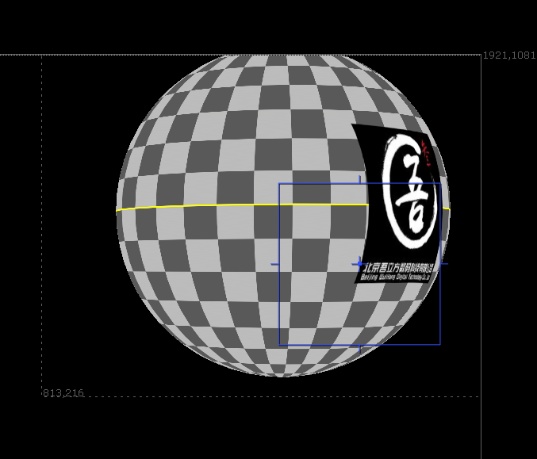
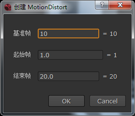
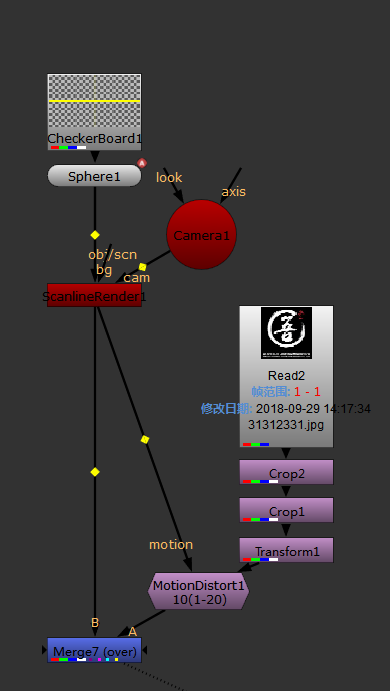
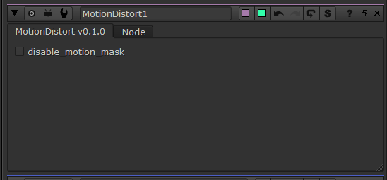

运动扭曲¶
基于 motion 层对输入图像进行运动匹配，会根据自起始帧累计的运动向量对图像进行扭曲。
注解
渲染器的运动模糊快门时间和偏移会影响输出运动向量的值。 将快门偏移设为 0（帧首），快门时间设为 1 (帧首至帧尾) 才是正确的整帧运动向量。
在菜单中选择 编辑 - 创建运动扭曲 进行创建。
需要指定效果基准帧和帧范围。
输入¶
默认输入为要进行扭曲的图像。
motion 输入应包含名为 motion 的层用于 IDistort 节点 UV 输入。
注解
因为扭曲是基于上一帧而不是初始帧，所以：
如果有运动导致图像压缩，后续帧的清晰度会有损失。
如果有帧使图像完全消失，后续帧将不会有图像重新出现。
控制¶
disable_motion_mask
如果运动数据的图像范围不能完全包含上一帧的变形后图像时将留下残影，因为数据为 0 时代表没有运动，应该保持不变。
默认自动根据 motion 输入的 alpha 通道去除残影，也可勾选此项后通过手动遮罩去除。